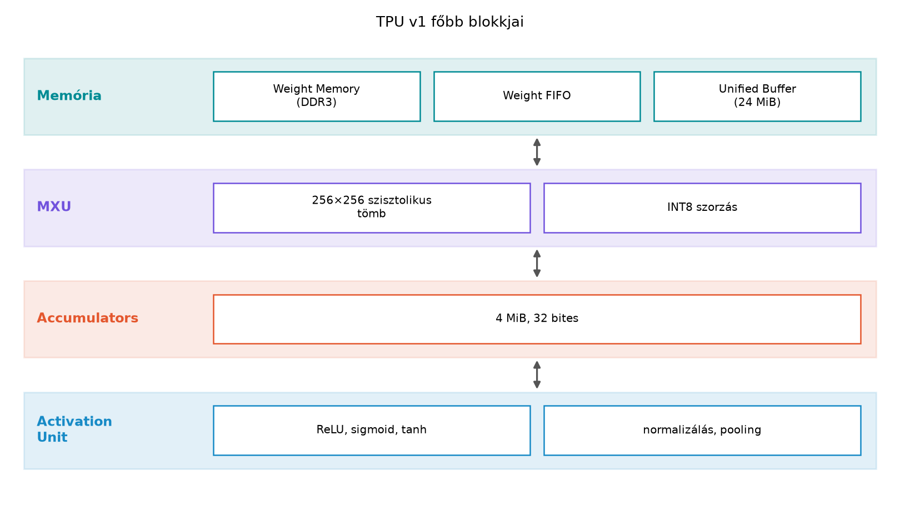

A GPU-k általános célú számítási modellje a SIMT (Single Instruction, Multiple Thread), amelyet a korábbi fejezetekben részletesen megismertünk. A GPU tervezésénél az elsődleges cél az volt, hogy a grafikai pipeline-okban felmerülő, párhuzamos de egyenként független feladatokat (például pixel shader futtatása millió pixelen) minél nagyobb átbocsátóképességgel hajtsa végre. A GPU-ból GPGPU-vá fejlődve is megmaradt ez az örökség: a hardver nagy számú, viszonylag egyszerű vezérlésű magot (CUDA core) és egy mély, de olyan mély memóriahierarchiát használ, amelynek nagyobb része (L1, L2) hardveresen kezelt cache, a shared memory pedig programozó által kezelt scratchpad. A programozó a szálak és blokkok koordinálásával éri el a teljesítményt.
A Google 2017-ben publikálta a TPU (Tensor Processing Unit) első generációjának architekturális leírását. A TPU tervezési kérdése nem az volt, hogy „hogyan gyorsítsunk fel mindenféle párhuzamos feladatot?”, hanem az, hogy „hogyan gyorsítsuk fel a neurális hálózatok következtetését (inference) a lehető legjobb teljesítmény/watt mutatóval?”. A neurális hálózatok számítási igényének túlnyomó részét a mátrixszorzás teszi ki:
A mátrixszorzás egy rendkívül szabályos adatfolyam-minta. Ez a szabályosság lehetővé teszi egy olyan célhardver építését, amely sokkal kevesebb vezérlési logikát és adatmozgatást igényel, mint egy GPU, miközben a számítási sűrűséget (FLOPs/terület, FLOPs/watt) drasztikusan megnöveli. Ez a célhardver a szisztolikus tömb.
A szisztolikus tömb (systolic array) neve a szívritmus analógiájából származik: az adatok a tömbön keresztül lüktetve, ritmikusan áramlanak. Képzeljünk el egy méretű rácsot, amelynek minden cellájában egy multiply–accumulate (MAC) egység található. Minden MAC egység képes egy ciklus alatt elvégezni a következő műveletet:
A TPU első generációjában ez a rács méretű, tehát 65 536 darab MAC egységet tartalmaz. Ez az egység a MXU (Matrix Multiply Unit).
A működés kulcsa az adatok mozgatásának mikéntje. A hagyományos processzorokban (CPU, GPU) egy MAC művelethez az utasításnak explicit módon be kell töltenie az adatokat a regiszterekbe. A szisztolikus tömbben az adatok nem „címzésre” mozognak, hanem szomszédos elemek között áramlanak.
Tekintsük a súly-állandós (weight-stationary) szisztolikus tömböt. Ez a TPU MXU működésének szíve. Az indexelés következetes: a szorzatban , a rács sorait , oszlopait indexeli, a -t 0-tól -ig számozzuk.
Súlyok betöltése: A a súlymátrix, az aktivációs (bemeneti) mátrix. A elemeit előre betöltjük: a rács pozíciójú MAC egysége a súlyt tárolja a saját regiszterében. A súlybetöltés időt vesz igénybe (egy csempe betöltése nagyságrendű ciklus), ezt a tervezés a számítással igyekszik átfedni.
Aktivációk áramlása: Az elem a . sor bal szélső MAC egységébe lép be, mert -val kell szorozni. Minden egység elvégzi a műveletet, majd az értéket továbbítja a tőle jobbra lévő egységnek. Az elemei tehát balról jobbra hullámoznak. A betáplálás ferdített (skewed): az a . sorba az ciklusban lép be, így a . sor ciklust késik az . sorhoz képest.
Részösszegek áramlása: A részösszege a . oszlop tetején 0-ról indul, lefelé halad a sorokon, és minden sorban hozzáadódik az szorzat. A egység az -t az . ciklusban dolgozza fel, így a részösszeg épp akkor ér a . sorba, amikor ott az is megérkezik. Az utolsó sor után a végső érték elhagyja az oszlop alját az . ciklusban (0-tól számolva).
Kézi példa -re. Legyen , . A rácsban , , , . Ciklusonkénti állapot (kézzel levezetve) az alábbi ábrán és táblázatban:
| Ciklus | Egység | Művelet | Eredmény |
|---|---|---|---|
| 0 | (0,0) | részösszeg 5 | |
| 1 | (1,0) | ||
| 1 | (0,0) | részösszeg 15 | |
| 1 | (0,1) | részösszeg 6 | |
| 2 | (1,0) | ||
| 2 | (1,1) | ||
| 2 | (0,1) | részösszeg 18 | |
| 3 | (1,1) |
A kapott megegyezik a mátrixszorzás eredményével. A ferdítés miatt a tömb eleinte és a végén nem teljesen telített (pipeline fill/drain), ez kihasználtsági veszteséget jelent kis mátrixoknál.
Ebben a sémában a MAC egységek a számítás közben nem címeznek memóriát: a súlyok bennük állnak, az aktivációk és a részösszegek a szomszédos elemek között mozognak; memóriából csak a tömb peremén olvasunk (aktivációk a Unified Bufferből) és írunk (részösszegek az Accumulatorokba). Ez drasztikusan csökkenti az energiafogyasztást, mert az adatmozgatás a chipen belüli, rövid, szabályos vezetékeken történik, nem pedig energiazabáló, címzett memória-hozzáférésekkel.
Gyakorlati megjegyzés a terminológiához: A szakirodalomban a TPU MXU-ját gyakran nevezik „szisztolikus tömbnek”, bár a pontos adatfolyam-megvalósítás a „systolic array” egy változata. A fent leírt súly-állandós, aktiváció-balról-jobbra, részösszeg-fentről-lefelé áramlás az a modell, amelyet a TPU v1 leírása megad. Az újabb TPU-generációk (v2 és későbbi) a modellt tovább finomították, de az alapelv változatlan.
Az MXU önmagában nem elegendő egy teljes neurális hálózati réteg lefuttatásához. A TPU v1 (Jouppi et al., 2017) fő blokkjai: a Matrix Multiply Unit, a 32 bites Accumulators (4 MiB), az Activation Unit, a Unified Buffer (24 MiB), a Weight FIFO és a Weight Memory (8 GiB DDR3), valamint a host-interfész (PCIe) és a DMA. Különálló VPU nem volt benne; a VPU a TPU v2-től jelenik meg.
MXU (Matrix Multiply Unit): A már ismertetett MAC-rács. A TPU v1-ben az MXU 8 bites egész (INT8) szorzásokat végez, és 32 bites egész számokat halmoz fel. Ez a pontosság az inference-hez elegendő, és a terület- és energiahatékonyságot maximalizálja. Egy ciklus alatt műveletet (szorzást és összeadást) képes elvégezni. 700 MHz-es órajel mellett ez a névleges csúcs körülbelül TOPS ( művelet másodpercenként).
Accumulators: 4 MiB, 32 bites puffer, amely az MXU kimeneti részösszegeit gyűjti, mielőtt azok az Activation Unitba kerülnek.
Activation Unit: célhardveres egység az aktivációs függvényekhez (ReLU, sigmoid, tanh) és a normalizáláshoz, pooláshoz. Ezek a műveletek elemenkéntiek vagy lokálisak, nem illenek a szisztolikus tömb adatfolyam-modelljébe. A függvények közelítésének pontos módját a publikáció nem részletezi ennek a tankönyvnek a szintjén, ezért itt nem állítunk többet.
A vektoros egység (VPU) a későbbi generációkban (TPU v2-től) jelenik meg: elemenkénti összeadás, szorzás, maximum-képzés és aktivációs függvények végrehajtására szolgál, az MXU mellett.
A TPU v1 a 24 MiB-os Unified Buffer-t használja on-chip puffernek, amely az aktivációkat tárolja (a 4 MiB-os Accumulators-szal együtt 28 MiB on-chip memória). A súlyok nem a Unified Bufferben vannak: az off-chip Weight Memory-ból (8 GiB DDR3 SDRAM) a Weight FIFO-n át érkeznek az MXU-ba. A modern GPU-kkal ellentétben a TPU v1 nem rendelkezik L1/L2 cache-sel; az adatok mozgatását a szoftver (a fordító) ütemezi explicit módon.
A két DDR3-2133 csatorna összesen 34 GB/s sávszélességet biztosít (Jouppi et al., 2017; a publikációból ellenőrzendő). Ez látszólag alacsony a GPU-khoz képest (egy modern GPU HBM3-mal több TB/s sávszélességet ér el), és a TPU v1 emiatt az MLP- és LSTM-terhelésen memóriakorlátos volt: a publikáció roofline-elemzése szerint a súlymemória sávszélessége korlátozta a teljesítményt. A tervezési cél az inference volt, a késleltetési korláton belül lehetséges nagyobb batch mérettel (nagyságrendileg 100–200, nem 1); a Unified Buffer az aktivációk pufferelését szolgálja, nem a teljes modell tárolását.
A következő generációk (TPU v2, v3, v4) a következtetésből a tanítás (training) felé terjeszkedtek, és HBM (High Bandwidth Memory) technológiára váltottak. A HBM a DRAM chipeket egy szilícium interposerre szereli, ami rendkívül széles buszt és nagy sávszélességet tesz lehetővé. A TPU v4 chipenként 32 GiB HBM2-t használ, körülbelül 1,2 TB/s sávszélességgel (a Cloud TPU dokumentáció szerint); összehasonlításul az A100 40 GB-os változata körülbelül 1,55 TB/s-ot ad. A v2–v4 generációkban az MXU -as (a v1 -os); a pontos generációs adatokat a Cloud TPU „System architecture” oldalán kell ellenőrizni.
Fontos különbség a GPU-hoz képest: A GPU memória-alrendszere általános célú: hardveresen kezelt L1/L2 cache-ek, mellettük programozó által kezelt shared memory, és egy koherens(ebb) memóriamodell. A TPU memória-alrendszere szorosan az MXU-hoz és az XLA fordítóhoz van hangolva. A szoftver a memória-hozzáféréseket sokkal determinisztikusabban ütemezi, mivel a műveletek sorrendje a gráffordítás során ismert. Ez lehetővé teszi a gyorsítótárazás és az adatfolyam pontosabb optimalizálását.
Az egyetlen TPU chip teljesítménye korlátozott. A modern munkaterhelések (nagy nyelvi modellek, transzformerek) több chip együttműködését igénylik. A TPU-k közötti összeköttetést az ICI (Inter-Chip Interconnect) biztosítja.
A GPU-k világában a hasonló szerepet az NVLink és az NVSwitch tölti
be, de a topológia és a kommunikációs primitívek (NCCL) szintje más. A
TPU-knél a kommunikációt is az XLA és a JAX keretrendszer vezérli, ami a
programozó számára magasabb szintű absztrakciót kínál (pl.
jax.jit NamedSharding-gel,
shard_map; a korábbi
pmap/xmap/pjit API-k részben
elavultak vagy megszűntek).
A GPU-kat C++-ban (CUDA) vagy OpenCL-ben programozzuk, és a kernel egy alacsony szintű, az adott hardverre szabott eljárás. A TPU-k programozása ezzel éles ellentétben áll: a TPU-t nem közvetlenül, hanem XLA (Accelerated Linear Algebra) nevű, gráf-alapú, szimbolikus programozási modellen keresztül programozzuk.
Gráfkonstrukció: A felhasználó (például JAX vagy
TensorFlow segítségével) egy magas szintű programot ír. Ez a program nem
hajtódik végre azonnal, hanem egy számítási gráfot
épít. A gráf csomópontjai műveletek (pl. dot,
add, relu), élei pedig a közöttük áramló
tenzorok.
Gráfoptimalizálás: Az XLA fordító ezt a gráfot
veszi bemenetként, és agresszív optimalizálásokat hajt végre. Ide
tartozik a holt kód eltávolítása, az algebrai egyszerűsítések, a
konstansok beégetése, és a legfontosabb: a művelet-fúzió
(operation fusion). A fúzió során az XLA több elemi műveletet
egyetlen, nagyobb, összetett kernelben egyesít. Például a
bias_add + relu + matmul
műveleteket egyetlen TPU kernelben hajthatja végre, csökkentve a köztes
eredmények memóriába írásának és onnan való visszaolvasásának
költségét.
Kódgenerálás és ütemezés: Az optimalizált gráf alapján az XLA platform-specifikus kódot generál. TPU esetén ez a kód közvetlenül az MXU, VPU és a memória-alrendszer utasításait vezérli. A GPU-tól eltérően a TPU kernel nem „hagyományos” C++ kód, hanem egy hardverközeli, de az XLA által generált leírás.
A JAX szerepe: A JAX egy Python-könyvtár, amely a
NumPy API-t ötvözi az automatikus differenciálással és az XLA háttérrel.
A JAX Pythonban írt kódja Python- és NumPy-függvényekből áll, de amikor
egy függvényt jax.jit-tel lefordítunk, a JAX a Python
végrehajtást megállítja, a függvény műveleteit egy XLA gráfba foglalja,
majd az XLA lefordítja azt a célhardverre. Ez azt jelenti, hogy a TPU-n
futó JAX program valójában XLA gráfként létezik, és a hardver soha nem
lát Python kódot.
Összehasonlítás a CUDA programozási modellel:
| Jellemző | CUDA / GPU | XLA / TPU |
|---|---|---|
| Programozási paradigma | Imperatív, thread-alapú | Szimbolikus, gráf-alapú |
| Hardver irányítása | Közvetlen kernel indítás, memóriakezelés | Absztrakt, XLA által ütemezett |
| Fő optimalizálási eszköz | Manuális tiling, shared memory, warp intrinsics | XLA gráfoptimalizálás, művelet-fúzió; haladóknak Pallas |
| Memóriamodell | Explicit, programozó által vezérelt (global, shared, register) | Alapesetben az XLA ütemezi a chip-memóriákat (VMEM/SMEM); a Pallas-szal kézi, BlockSpec-alapú tiling is írható |
| Fő hardveregység | SM-ek, sok CUDA core | MXU (szisztolikus tömb), VPU |
| Tipikus pontosság | FP32, FP16, TF32, BF16, INT8 | BF16 (FP32 felhalmozás), INT8, FP8 (generációtól függően; ellenőrzendő a Cloud TPU dokumentációban) |
Ez a labor nem egy teljes TPU hozzáférést igénylő instrukció, hanem a módszertan bemutatása és egy GPU-n futtatható alapvonal (baseline) felállítása. A TPU hozzáférést igénylő részeket JAX/XLA kóddal és az XLA gráf elemzésével demonstráljuk, de tényleges TPU futás nélkül. Az alábbi kód nem végrehajtott utasítás, hanem a mérések elvégzésének vázlata.
Cél: Megmérni egy mátrixszorzás (GEMM)
teljesítményét GPU-n, és egy TPU-n várható teljesítményt becsülni a
névleges hardveradatok alapján. A mérés rögzíti a környezetet.
Előfeltétel: CUDA toolkit és Python környezet JAX-szel.
Lépések:
GPU mérés CUDA/C++-ban: Lefordítjuk és futtatjuk
az alábbi CUDA C++ programot, amely egy
-os
GEMM-et hajt végre cuBLAS segítségével. A mérés előtt 5 warm-up, majd 20
ismétlés cudaEvent-tel; rögzítjük a medián futásidőt, az
IQR-t és a FLOP/s értéket; az
GEMM aritmetikai intenzitása
FLOP/bájt, tehát számításkorlátos, a „sávszélesség” itt nem mérendő
mennyiség.
// CUDA C++ (C++17), NVIDIA CUDA 12.4
// GPU: NVIDIA A100 40GB, driver 550.54.14, compute capability 8.0
// OS: Ubuntu 22.04 LTS
// A kód hibakezeléssel és méréssel ellátva; nem futtatott példa.
#include <algorithm>
#include <cstdio>
#include <cstdlib>
#include <vector>
#include <cublas_v2.h>
#define CUDA_CHECK(call) \
do { \
cudaError_t err = (call); \
if (err != cudaSuccess) { \
std::fprintf(stderr, "CUDA error at %s:%d: %s\n", \
__FILE__, __LINE__, cudaGetErrorString(err)); \
std::exit(EXIT_FAILURE); \
} \
} while (0)
#define CUBLAS_CHECK(call) \
do { \
cublasStatus_t st = (call); \
if (st != CUBLAS_STATUS_SUCCESS) { \
std::fprintf(stderr, "cuBLAS error at %s:%d: %d\n", \
__FILE__, __LINE__, static_cast<int>(st)); \
std::exit(EXIT_FAILURE); \
} \
} while (0)
int main() {
const int M = 4096, N = 4096, K = 4096;
const float alpha = 1.0f, beta = 0.0f;
double flops = 2.0 * double(M) * double(N) * double(K);
size_t bytes_moved = size_t(M) * K * sizeof(float)
+ size_t(K) * N * sizeof(float)
+ size_t(M) * N * sizeof(float);
// Host memória allokálása
std::vector<float> h_A(M * K), h_B(K * N);
for (int i = 0; i < M * K; ++i) h_A[i] = float(rand()) / RAND_MAX;
for (int i = 0; i < K * N; ++i) h_B[i] = float(rand()) / RAND_MAX;
// Device mutatók
float *d_A, *d_B, *d_C;
CUDA_CHECK(cudaMalloc(&d_A, M * K * sizeof(float)));
CUDA_CHECK(cudaMalloc(&d_B, K * N * sizeof(float)));
CUDA_CHECK(cudaMalloc(&d_C, M * N * sizeof(float)));
CUDA_CHECK(cudaMemcpy(d_A, h_A.data(), M * K * sizeof(float),
cudaMemcpyHostToDevice));
CUDA_CHECK(cudaMemcpy(d_B, h_B.data(), K * N * sizeof(float),
cudaMemcpyHostToDevice));
cublasHandle_t handle;
CUBLAS_CHECK(cublasCreate(&handle));
// Egy SGEMM-hívás (row-major C = A * B a column-major cuBLAS-szal).
auto gemm = [&]() {
CUBLAS_CHECK(cublasSgemm(handle, CUBLAS_OP_N, CUBLAS_OP_N,
N, M, K, &alpha, d_B, N, d_A, K,
&beta, d_C, N));
};
// Warm-up: 5 iteráció
for (int i = 0; i < 5; ++i) gemm();
CUDA_CHECK(cudaDeviceSynchronize());
// Mérés: 20 iteráció, ismétlésenként GPU-eseményekkel.
cudaEvent_t start, stop;
CUDA_CHECK(cudaEventCreate(&start));
CUDA_CHECK(cudaEventCreate(&stop));
const int reps = 20;
std::vector<float> t_ms;
for (int i = 0; i < reps; ++i) {
CUDA_CHECK(cudaEventRecord(start));
gemm();
CUDA_CHECK(cudaEventRecord(stop));
CUDA_CHECK(cudaEventSynchronize(stop));
float ms = 0.0f;
CUDA_CHECK(cudaEventElapsedTime(&ms, start, stop));
t_ms.push_back(ms);
}
std::sort(t_ms.begin(), t_ms.end());
double median_ms = 0.5 * (t_ms[9] + t_ms[10]);
double iqr_ms = t_ms[14] - t_ms[4];
double s = median_ms / 1000.0;
double tflops = (flops / s) / 1e12;
double bandwidth_gb_s = (bytes_moved / s) / 1e9;
std::printf("GPU cuBLAS SGEMM, M=N=K=%d\n", M);
std::printf("Medián: %.3f ms, IQR: %.3f ms\n", median_ms, iqr_ms);
std::printf("Teljesítmény: %.2f TFLOP/s (cuBLAS SGEMM)\n", tflops);
// Nem sávszélesség-mérés: a GEMM számításkorlátos.
std::printf("Ideális adatmozgás / idő: %.2f GB/s\n", bandwidth_gb_s);
CUDA_CHECK(cudaEventDestroy(start));
CUDA_CHECK(cudaEventDestroy(stop));
CUDA_CHECK(cudaFree(d_A));
CUDA_CHECK(cudaFree(d_B));
CUDA_CHECK(cudaFree(d_C));
CUBLAS_CHECK(cublasDestroy(handle));
return 0;
}Fordítás:
nvcc -O3 -std=c++17 -arch=sm_80 -lcublas gemm_benchmark.cu -o gemm_benchmarkFuttatás:
./gemm_benchmarkVárt eredmény (nem futtatott kód, ezért mért érték nincs): egy A100-on a cuBLAS FP32 SGEMM teljesítménye nem haladhatja meg a 19,5 TFLOP/s névleges FP32 csúcsot (TF32 Tensor Core nélkül); a mért érték <mért – kitöltendő>. A mérési naplóba rögzíteni kell a pontos értéket és a cuBLAS verzióját. Figyelem: a TPU becslés (BF16) más precízió; azonos precíziójú összevetéshez az A100 BF16 Tensor Core csúcsa (312 TFLOP/s, gyártói adat) vagy TF32 használandó.
TPU becslés JAX/XLA segítségével: A TPU teljesítményét a névleges hardveradatokból becsüljük. A TPU v4 egyetlen chipje FP32 mátrixszorzáshoz nem az ideális választás (BF16 mellett éri el a csúcsát). A TPU v4 chipenkénti BF16 csúcsteljesítménye a Google által publikált adat szerint 275 TFLOP/s (Cloud TPU dokumentáció; Jouppi et al., 2023). Egy 4096x4096-os GEMM esetén a szükséges FLOP-ok: FLOP. Ha feltételezzük, hogy a TPU a csúcs 70%-át éri el (feltételezés, nem mérés), a futásidő:
Fontos: Ez a becslés nem mért eredmény, hanem modell-alapú kalkuláció. A tényleges TPU futásidőhöz hozzáférés szükséges.
A JAX kód, amely a TPU-ra fordítható lenne (itt csak a gráf létrehozását mutatjuk be, futtatás nélkül):
# Python 3.10, JAX 0.4.26, jaxlib 0.4.26 (CPU-only build, TPU nincs
# csatlakoztatva; nem futtatott példa)
# A kód célja az XLA gráf felépítésének bemutatása, nem tényleges TPU futtatás.
import jax
import jax.numpy as jnp
# A matmul lefordítva XLA gráffá. TPU háttérrel a 'jax.devices()' listában
# megjelenne a TPU device. Itt CPU-t használunk a példa kedvéért.
@jax.jit
def gemm(a, b):
return jnp.dot(a, b)
# Véletlen mátrixok
key = jax.random.PRNGKey(0)
ka, kb = jax.random.split(key) # külön kulcs: a és b független
a = jax.random.normal(ka, (4096, 4096), dtype=jnp.bfloat16)
b = jax.random.normal(kb, (4096, 4096), dtype=jnp.bfloat16)
# A gráf ellenőrzése
lowered = gemm.lower(a, b)
print("Az XLA HLO modul (részlet):")
print(lowered.compiler_ir(dialect='hlo').as_hlo_text()[:500])
# A 'as_hlo_text()' metódus a JAX verziófüggő, ellenőrizni kell a dokumentációt.A kimenet egy HLO (High Level Optimizer) gráfot mutat, amelyben a
dot művelet a TPU MXU-ra lesz leképezve.
A TPU architektúra megértése azt jelenti, hogy felismerjük a mátrixszorzás dominanciáját a modern gépi tanulásban, és azt, hogy a szisztolikus tömb hogyan szolgálja ki ezt a dominanciát minimális energiafogyasztás mellett. A GPU-k általános célú párhuzamos gépek, amelyekre a programozó saját maga írja a memóriakezelést és a szinkronizációt. A TPU ezzel szemben egy speciális célú, de rendkívül hatékony adatfolyam-gép, amelynek programozása magasabb szintű, gráf-alapú nyelveken (XLA) keresztül történik.
Tipikus hibák, amiket el kell kerülni:
A TPU-t „mágikus doboznak” tekinteni: A TPU nem gyorsít fel minden kódot. Ha a feladat nem dominánsan mátrixszorzás (pl. rendezés, gráfbejárás, string feldolgozás), a TPU teljesítménye drasztikusan visszaesik a GPU-hoz képest, mert a VPU és a vezérlőegység gyenge, általános célú magok.
A memória- és számítási modell figyelmen kívül
hagyása: A TPU-n a teljesítményt alapesetben az XLA gráf
optimalizálása és az adatok elrendezésének (sharding) magas szintű
megválasztása határozza meg; az XLA maga választ csempéket. A CUDA
__shared__ memóriás trükkjei közvetlenül nem alkalmazhatók,
de a Pallas (jax.experimental.pallas) lehetővé teszi a
kézi, BlockSpec-alapú tilinget a TPU lokális memóriáira
(VMEM/SMEM).
A pontosság figyelmen kívül hagyása: A TPU v1 kizárólag INT8 inference-t támogatott. A későbbi generációk MXU-ja BF16 bemenettel és FP32 felhalmozással dolgozik, az újabbak INT8-at (és generációtól függően FP8-at) is támogatnak (a pontos lista a Cloud TPU dokumentációból ellenőrzendő); az FP32 több BF16-menettel emulálható, az FP64 hiányzik vagy lassú. Ha egy tudományos számítás FP64 pontosságot igényel, a TPU általában nem megfelelő választás, és a GPU továbbra is előnyös.
A hordozhatóság túlértékelése: A TPU-ra írt JAX/XLA kód hordozható CPU-ra és GPU-ra is (az XLA háttér miatt). Ez igaz, de teljesítmény szempontjából korántsem mindegy. A GPU-ra optimalizált XLA kód nem feltétlenül lesz optimális TPU-n, és fordítva. A sharding stratégiák, a memóriaátrendezések és a kernelválasztás platformfüggő.
Önellenőrző kérdés: Magyarázza el, mi történik a súly-állandós szisztolikus tömb első órajel-ciklusában, ha a mátrix már betöltődött a MAC egységekbe, és az belép a 0. sor bal szélére. Mikor kész a érték egy -es tömbben, és miért nem ciklus múlva?
Válasz: az első ciklusban csak a egység dolgozik: . A a . oszlop aljáról az . ciklusban (0-tól számolva) lép ki, mert az a ferdítés miatt -ben lép be, egységnyit halad jobbra, a részösszeg pedig sort ér le; a 2×2-es példában a 3. ciklusban készül el. A ciklus csak az oszlopon belüli vízszintes késleltetés, a feltöltés/ürítés (fill/drain) és a sorok száma nem szerepel benne.